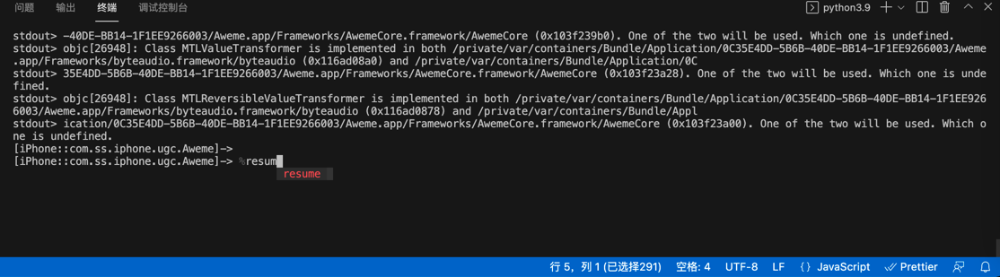
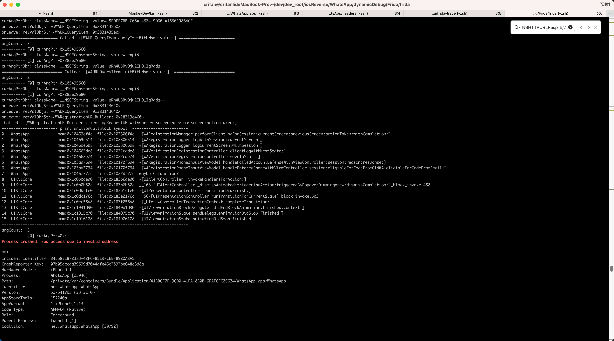
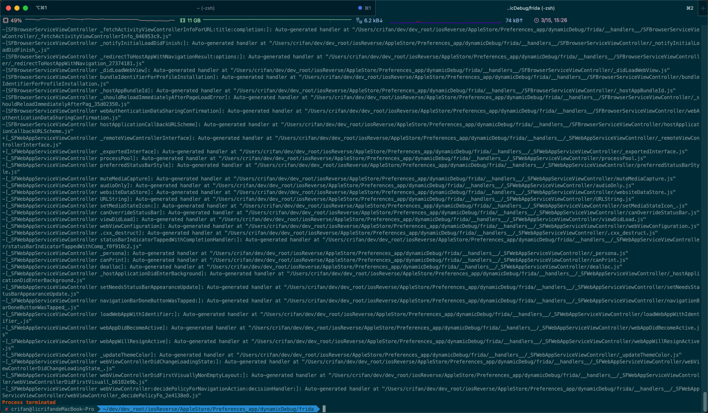
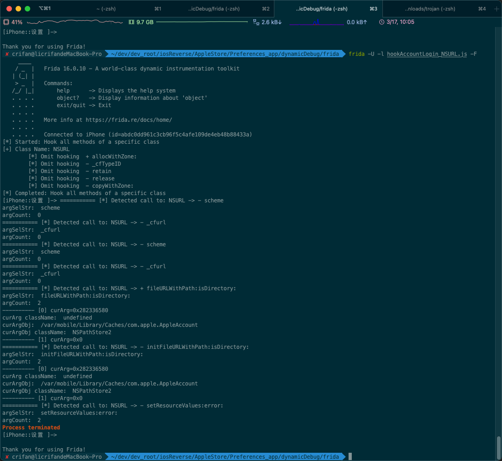

常见问题和报错
常见问题
关于frida启动后，被调试的目标，是否暂停运行的问题
- 背景
- frida启动调试后，被调试的目标（app或进程），是否已经暂停运行
- 旧版frida：自动暂停运行
- 支持参数：
--no-pause
- 支持参数：
- 新版frida：（逻辑已经变成了）不暂停运行 = 已经继续运行了
- 支持参数：
--pause
- 支持参数：
- 旧版frida：自动暂停运行
- frida启动调试后，被调试的目标（app或进程），是否已经暂停运行
- 所以
- 旧版frida
- 常会遇到一个问题：每次frida（以Attach后Spawn去）启动调试后，程序自动暂停运行
- 解决办法：手动输入
%resume- 
- 解决办法：手动输入
- 所以就希望：frida调试开始后，自动继续运行，不要每次都输入
%resume才继续运行- 解决办法：加
--no-pause参数- 参数含义：
--no-pause automatically start main thread after startup - 举例
frida -U --no-pause -f com.ss.iphone.ugc.Aweme -l frida/dyldImage.js
- 参数含义：
- 解决办法：加
- 常会遇到一个问题：每次frida（以Attach后Spawn去）启动调试后，程序自动暂停运行
- 新版frida
- 用新版frida，加了参数
--no-pause，报错不支持此参数：frida: error: unrecognized arguments: --no-pause- 解决办法：不要加任何参数
- 举例
frida -U -N com.apple.Preferences -l hookAccountLogin_singleClassAllMethod.js
- 举例
- 解决办法：不要加任何参数
- -》
- 如果需要启动后
- 自动继续运行
- 则：无需加任何参数
- 因为新版frida已经变成这个逻辑了
- 则：无需加任何参数
- 自动暂停运行
- 再去加新版才支持的参数：
--pause- 参数含义：
--pause leave main thread paused after spawning program
- 参数含义：
- 再去加新版才支持的参数：
- 自动继续运行
- 如果需要启动后
- 用新版frida，加了参数
- 旧版frida
导致iPhone重启
之前遇到过：
XinaA15的rootless越狱的iPhone11中，用最新版v16.0.10的Frida，但是却：会导致iPhone重启（从而丢失XinaA15的越狱，需要再去恢复越狱）
但是：没有解决方案。
目前的结论是：
（XinaA15等）rootless越狱后，Frida的使用，基本上是个大问题，有时候（某个旧版本）能用，有时候（此处新版v16.0.10）却又无法正常使用。
常见报错
Process crashed: Bad access due to invalid address
- 问题：
Called: -[WARegistrationURLBuilder clientLogRequestURLWithCurrentScreen:previousScreen:actionTaken:]
...
argCount: 3
---------- [0] curArgPtr=0xc
Process crashed: Bad access due to invalid address
...

- 原因
- 表面原因：访问了非法地址：
0xc - 深层次原因：对于值明显异常的地址，没有做过滤，没有排除掉
- 表面原因：访问了非法地址：
- 解决办法：加上过滤，排除掉，地址值明显异常的地址
- 具体步骤：
代码改为：
// check pointer is valid or not
// example
// 0x103e79560 => true
// 0xc => false
function isValidPointer(curPtr){
let MinValidPointer = 0x10000
var isValid = curPtr > MinValidPointer
return isValid
}
...
if (isValidPointer(curArg)) {
...
}
即可避免访问非法地址指针，避免崩溃。
Waiting for USB device to appear
- 问题：Mac中运行frida去调试app
frida -U -f com.apple.store.Jolly- 但是报错
Waiting for USB device to appear...
- 但是报错
- 原因：（连接iPhone到Mac的）USB数据线没插好
- 解决办法：重新拔插USB数据线，确保USB连接正常
- 注：
- 如何确认iPhone是否已插好
- 方式1：通过爱思助手可以确认
- 已插好：能看到iPhone详情
- 没插好：看不到iPhone设备
- 方式2：用frida的工具frida-ls-devices
- 方式1：通过爱思助手可以确认
- 如何确认iPhone是否已插好
- 注：
Failed to attach: need Gadget to attach on jailed iOS
- 问题：Mac中用frida启动iOS版抖音
frida -U -f com.ss.iphone.ugc.Aweme- 报错
Failed to attach: need Gadget to attach on jailed iOS; its default location is: /Users/crifan/.cache/frida/gadget-ios.dylib
- 报错
- 原因：缺少对应的Frida的
gadget库文件 - 解决办法
- 概述：下载对应版本的
gadget库文件，放到对应位置（此处提示的/Users/crifan/.cache/frida/gadget-ios.dylib）即可 - 详见：安装Frida中的
安装Frida的gadget
- 概述：下载对应版本的
Failed to spawn: unable to find process with name 'Preferences'
- 报错：
Failed to spawn: unable to find process with name 'Preferences' - 原因：frida命令用的是
frida -U -l ./hookAccountLogin.js -n Preferences- 其中
-n是加二进制名称，此处Preferences是app，所以属于参数使用错误，调试目标语法搞错了
- 其中
- 解决办法：
- 搞懂frida的调试目标方式，改为别的方式即可
- 方式1：用
-N app_package_idfrida -U -l ./hookAccountLogin.js -N com.apple.Preferences - 方式2：换
-p PIDfrida -U -l ./hookAccountLogin.js -p 18031- 其中是用iPhone中ssh中通过ps查看到
~ ps -A | grep Preferences ... 18031 ?? 0:02.43 /Applications/Preferences.app/Preferences- 得知
Preferences的PID是18031
- 得知
- 其中是用iPhone中ssh中通过ps查看到
- 方式3：用
-Ffrida -U -l ./hookAccountLogin.js -F- 注：确保
Preferences=系统的设置app，处于最前台在运行才能用-F
- 注：确保
- 方式1：用
- 搞懂frida的调试目标方式，改为别的方式即可

Error: unable to intercept function at 0x202be0460; please file a bug
- 现象：Frida的hook的js代码中，函数地址写的是：
var akdSymbol2575_functionAddress = 0x1000a0460;- 导致报错：
moduleName= akd moduleBaseAddress= 0x102b40000 functionRealAddress)= 0x202be0460 Error: unable to intercept function at 0x202be0460; please file a bug at value (frida/runtime/core.js:367)
- 导致报错：
- 原因：函数地址写错了 -》 找不到函数地址 -》 所以报错
- 解决办法：确保函数地址是正确的
- 具体做法：代码改为：
var akdSymbol2575_functionAddress = 0xa0460;- 说明
0x1000a0460是 加了VM虚拟地址后的 akd二进制内函数的地址0xa0460：是不带VM的，真正的函数内的偏移地址
- 说明
ValueError: file descriptor cannot be a negative integer (-42)
- 问题：
frida-ps、frida-ls-devices等frida-tools工具运行时报错：ValueError: file descriptor cannot be a negative integer (-42) - 原因：当前
12.0.3的frida-tools有bug - 解决办法：升级到最新版
frida-tools - 具体步骤：
pip install --upgrade frida_tools- 注：查看当前frida-tools的版本：
pip show frida_tools
- 注：查看当前frida-tools的版本：
Process terminated=进程结束=崩溃退出
目前遇到多种现象和可能原因：
由于hook函数太多导致崩溃
- 现象一：用frida-trace去hook太多的类Obj的函数
frida-trace -U -F com.apple.Preferences -m "*[AA* *]" -m "*[AK* *]" -m "*[AS* *]" -m "*[NS* *]" -M "-[ASDBundle copyWithZone:]" -M "-[ASDInstallationEvent copyWithZone:]"- 导致崩溃退出报错：
Process terminated- 
- 导致崩溃退出报错：
- 原因：
frida-trace去hook的函数太多了，估计是，加了-m "*[NS* *]"后导致崩溃- 注：iOS的ObjC的内部的多数，甚至是大多数，都是
NS开头的，导致匹配到太多的类和函数，系统处理不过来了，导致frida崩溃，同时导致被调试的app崩溃。- 注：
NS=NextStep，是iOS系统前身的苹果收购的NextStep公司名字
- 注：
- 解决办法：减少hook的范围=缩小匹配范围，比如此处改为：
-m "*[NSXPC* *]"，暂时只关注我们要调试的NSXPCConnection的相关内容，基本上可以：避免崩溃
- 注：iOS的ObjC的内部的多数，甚至是大多数，都是
frida的new ObjC.Object方面的bug
- 现象：
- 概述
frida调试时，由于加了new ObjC.Object(someArg)的ptr转换成ObjC的对象，结果就会时不时的遇到Process terminated，而崩溃停止退出调试 - 详解=具体现象
- 概述
代码：
...
function hook_class_method(class_name, method_name)
{
var hook = ObjC.classes[class_name][method_name];
Interceptor.attach(hook.implementation, {
onEnter: function(args) {
console.log("=========== [*] Detected call to: " + class_name + " -> " + method_name);
//objc的函数，第0个参数是id，第1个参数是SEL，真正的参数从args[2]开始
const argId = args[0];
// console.log("argId: ", argId);
const argSel = args[1];
// console.log("argSel: ", argSel);
const argSelStr = ObjC.selectorAsString(argSel);
console.log("argSelStr: ", argSelStr);
const argCount = occurrences(argSelStr, ":");
console.log("argCount: ", argCount);
for (let curArgIdx = 0; curArgIdx < argCount; curArgIdx++) {
const curArg = args[curArgIdx + 2];
// console.log("[%d] curArg: ", curArgIdx, curArg);
// console.log("[%d]=", curArgIdx, " ,curArg=", curArg);
// console.log("[%d]=" + curArgIdx + " ,curArg=" + curArg);
console.log("---------- [" + curArgIdx + "] curArg=" + curArg);
if (curArg && (curArg != 0x0)) {
console.log("curArg className: ", curArg.$className);
const curArgObj = new ObjC.Object(curArg);
console.log("curArgObj: ", curArgObj);
console.log("curArgObj className: ", curArgObj.$className);
}
}
}
});
}
...
可以hook输出部分log日志，但是很快，时不时的，就崩溃退出了：
✘ crifan@licrifandeMacBook-Pro ~/dev/dev_root/iosReverse/AppleStore/Preferences_app/dynamicDebug/frida frida -U -l hookAccountLogin_NSURL.js -F
____
/ _ | Frida 16.0.10 - A world-class dynamic instrumentation toolkit
| (_| |
> _ | Commands:
/_/ |_| help -> Displays the help system
. . . . object? -> Display information about 'object'
. . . . exit/quit -> Exit
. . . .
. . . . More info at https://frida.re/docs/home/
. . . .
. . . . Connected to iPhone (id=abdc0dd961c3cb96f5c4afe109de4eb48b88433a)
[*] Started: Hook all methods of a specific class
[+] Class Name: NSURL
[*] Omit hooking + allocWithZone:
[*] Omit hooking - _cfTypeID
[*] Omit hooking - retain
[*] Omit hooking - release
[*] Omit hooking - copyWithZone:
[*] Completed: Hook all methods of a specific class
[iPhone::设置 ]-> =========== [*] Detected call to: NSURL -> - scheme
argSelStr: scheme
argCount: 0
=========== [*] Detected call to: NSURL -> - _cfurl
argSelStr: _cfurl
argCount: 0
=========== [*] Detected call to: NSURL -> - scheme
argSelStr: scheme
argCount: 0
=========== [*] Detected call to: NSURL -> - _cfurl
argSelStr: _cfurl
argCount: 0
=========== [*] Detected call to: NSURL -> + fileURLWithPath:isDirectory:
argSelStr: fileURLWithPath:isDirectory:
argCount: 2
---------- [0] curArg=0x282336580
curArg className: undefined
curArgObj: /var/mobile/Library/Caches/com.apple.AppleAccount
curArgObj className: NSPathStore2
---------- [1] curArg=0x0
=========== [*] Detected call to: NSURL -> - initFileURLWithPath:isDirectory:
argSelStr: initFileURLWithPath:isDirectory:
argCount: 2
---------- [0] curArg=0x282336580
curArg className: undefined
curArgObj: /var/mobile/Library/Caches/com.apple.AppleAccount
curArgObj className: NSPathStore2
---------- [1] curArg=0x0
=========== [*] Detected call to: NSURL -> - setResourceValues:error:
argSelStr: setResourceValues:error:
argCount: 2
Process terminated
[iPhone::设置 ]->
Thank you for using Frida!

- 原因：暂不完全清楚
- 可能原因：
frida的ObjC的Objcect转换方面的bug，暂时无法解决- 详见：
- 【未解决】frida中hook函数打印参数值时最后app崩溃frida输出Process terminated
- 【未解决】frida中hook调试iOS的ObjC的函数参数时始终出现崩溃Process terminated
- 详见：
- 可能原因：